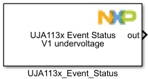
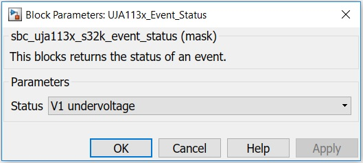

UJA113x Event Status Block
This block returns the status of an event selected from an available list.
Block Image
Inputs:
- None
Outputs:
- Event status: value 1 - means the event was detected; value 0 - the event was not detected.
Parameters and Dialog Box
The block has one parameter:
Status
Available list with possible detectable events.
Block Dependency
Please do the following:
- Configure the UJA113x Configuration block.
- Configure the LPSPI Configuration block.
Block Miscellaneous Details
- None
* To get more information refer to Hardware Manual documentation.